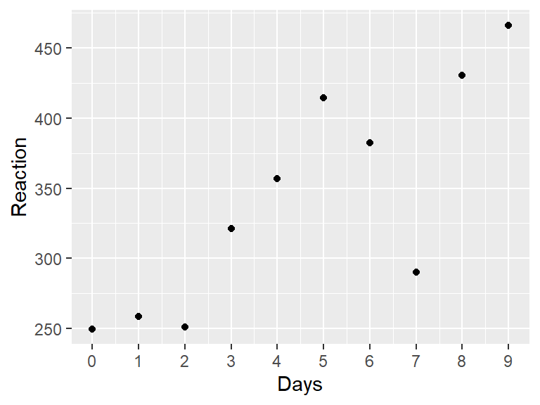
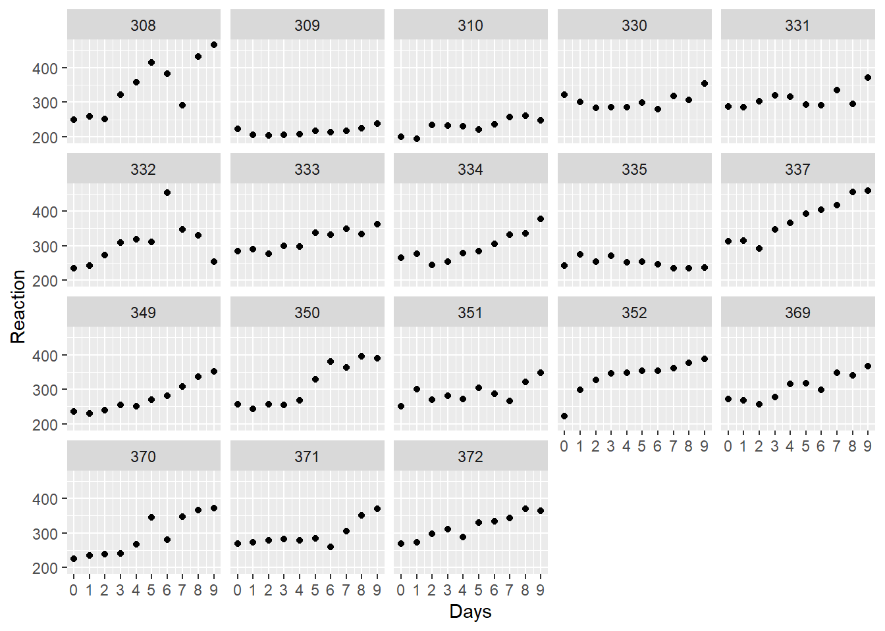
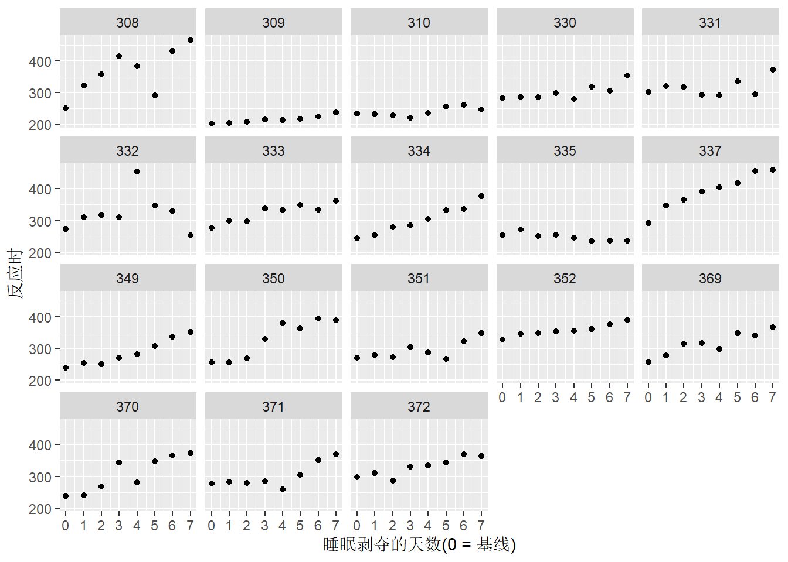
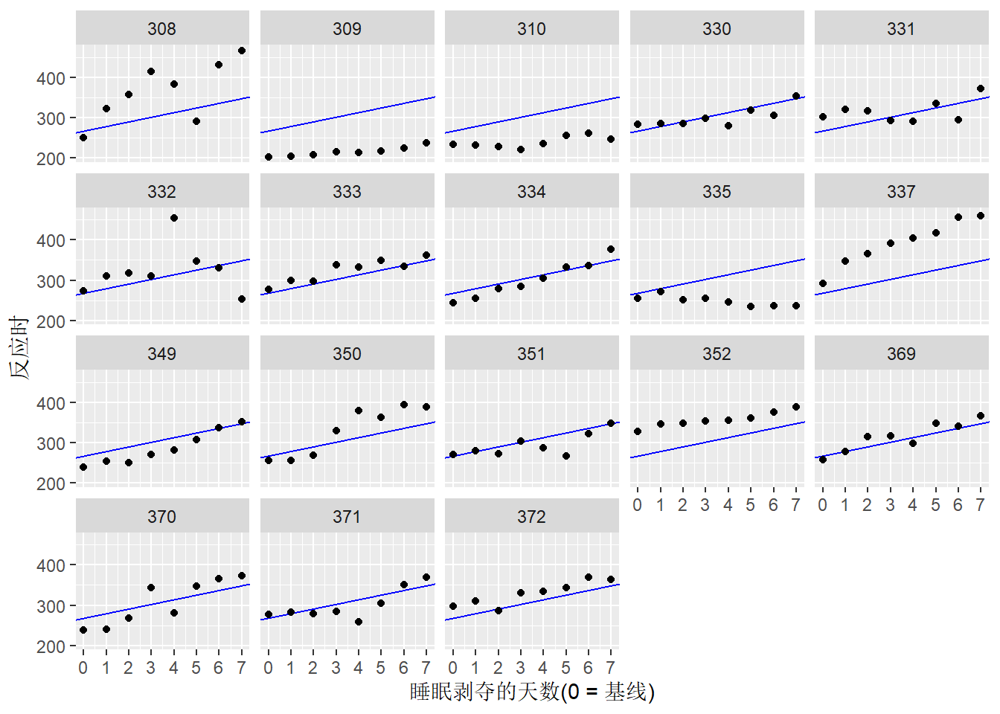
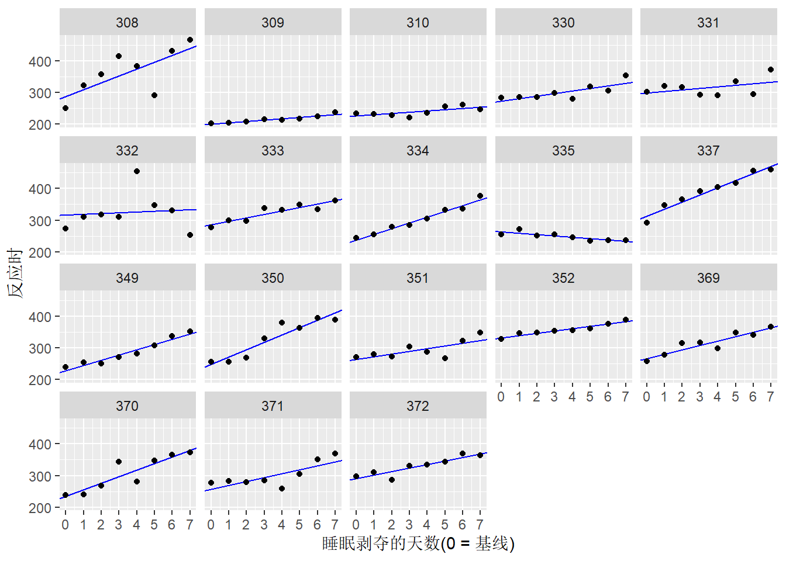

library(lme4)
library(tidyverse)
just_308 <- sleepstudy %>%
filter(Subject == "308")
ggplot(just_308, aes(x = Days, y = Reaction)) +
geom_point() +
scale_x_continuous(breaks = 0:9)
学习统计模型——通过R模拟
周博霖
March 2, 2026
本系列内容是本人对2024年翻译的《学习统计模型——通过R模拟》的简单搬运。 该书翻译内容已部署于Netlify平台，考虑到部分爱好者可能无法正常访问该平台，特将内容搬运到博客，方便大家参考学习。
2026年3月2日查询原文github，显示部分文件于1年前更新，受个人精力限制，不对更新内容进行对比，还是推荐有条件者阅读原文。
本章中的一些观点来自 McElreath (2020) 的《Statistical Rethinking》，还广泛借鉴了Tristan Mahr关于部分混合(partial pooling)的出色博客。
在本章中，我们将使用一些来自研究睡眠剥夺对心理运动能力(psychomotor performance)影响的真实数据(Belenky et al., 2003)。该研究的数据包含在R的lme4包中的内置数据集sleepstudy中(Bates et al., 2015)。
让我们从查看sleepstudy数据集的文档开始。加载lme4包后，你可以在控制台中输入?sleepstudy来访问文档。
注：这是对数据集文档的中文翻译 sleepstudy package:lme4 R Documentation
睡眠剥夺研究中的反应时
描述：
一项睡眠剥夺研究中，被试每天的平均反应时(以毫秒为单位)。
第0-1天为适应和训练阶段(T1/T2)，第2天为基线(B)；睡眠剥夺从第2天开始。格式：
一个包含180个观测结果的数据框，其中包含以下3个变量：
Reaction：平均反应时(毫秒)
Days：睡眠剥夺的天数
Subject：进行观测的被试编号详细信息：
这些数据来自Belenky et al.(2003)描述的研究，针对的是最严重的睡
眠剥夺组(每天仅睡3小时)和研究的前10天，直到恢复期。原始研究分析
了速度(1/反应时)，并将天数作为分类而非连续预测变量进行处理。参考文献：
Gregory Belenky, Nancy J. Wesensten, David R. Thorne, Maria L.
Thomas, Helen C. Sing, Daniel P. Redmond, Michael B. Russo and
Thomas J. Balkin (2003) Patterns of performance degradation and
restoration during sleep restriction and subsequent recovery: a
sleep dose-response study. _Journal of Sleep Research_ *12*, 1-12.这些数据符合我们对多层数据的定义，因为在十天内对同一被试的同一因变量(平均反应时)进行了重复测量。这种类型的多层数据在心理学中非常常见。不幸的是，大多数心理学课程常用的统计教材对多层数据的讨论是不充分的，通常只涉及配对样本t检验和重复测量ANOVA。sleepstudy数据集很有趣，因为它是多层的，但有一个连续的预测变量，因此不适合t检验或ANOVA，因为这两种方法都是针对分类预测变量的。有方法可以让数据适应其中一个框架，但会丢失信息或可能违反假设。
遗憾的是，心理学专业的学生并没有真正学会如何分析多层数据。想想你最近读过的心理学或神经科学的研究。有多少研究是对每个被试只测量一次因变量？很少，如果有的话。几乎所有研究都进行了多次测量，因为以下一种或多种原因：(1)研究者在被试内设计中跨因子多水平测量同一被试；(2)他们有兴趣评估随时间的变化；或(3)他们在测量对多种刺激的反应。多层数据如此常见，以至于多层分析应该作为心理学中的默认方法来教授。学习多层分析可能具有挑战性，但你已经通过学习相关和回归掌握了大部分所需的知识。你会发现它只是简单回归的扩展。
让我们更详细地看看sleepstudy数据。该数据集包含来自三小时睡眠情况下的十八位被试。在为期十天的时间里，被试每天进行十分钟的“心理运动警觉性测试(psychomotor vigilance test)”，在每次出现刺激时尽快按下按钮。数据集中的因变量是被试在当天任务中的平均反应时(RT)。
开始分析的一个好方法是绘制数据图。下面是一个被试的数据。

练习
使用ggplot重现下面的图，这包含了所有18个被试。

从第2天开始到第10天，RT似乎随着睡眠剥夺天数的增加而增加。
上面给出了绘制单个被试数据的代码。通过去掉filter()语句并添加以facet_开头的ggplot2函数，将此代码改为显示所有被试的数据。
要合理地对数据进行建模，我们首先需要了解更多关于设计的信息 Belenky et al. (2003) 在他们的研究中是这样描述的(p. 2)：
前3天(T1、T2和B)是适应和训练(T1和T2)以及基线(B)，被试要求从23:00到07:00上床睡觉[在床时间(time in bed，TIB)为8小时]。在第3天(B)，进行了基线测量。从第4天开始，连续7天(E1-E7)，被试处于4种睡眠条件之一[TIB为9小时(22:00–07:00)，TIB为7小时(24:00–07:00)，TIB为5小时(02:00–07:00)或TIB为3小时(04:00–07:00)]，实际上是一种睡眠延长条件和三种睡眠限制条件。
从第3天之后的第1晚开始，有7晚的睡眠限制。前2天，编码为0、1，是适应(adaptation)和训练(training)。编码为2的那天是进行基线测量的时间，应该是我们分析开始的地方。如果我们将0和1两天包含在我们的分析中，可能会偏倚(bias)我们的结果，因为前两天的任何表现变化都与训练有关，而不是与睡眠限制有关。
练习
从数据集中删除Days编码为0或1的观察值，然后根据Days变量创建一个新的变量days_deprived，使序列从第2天开始，第2天重新编码为第0天，第3天为第1天，第4天为第2天，依此类推。这个新变量现在追踪睡眠剥夺的天数。将新表存储为sleep2。
仔细检查代码是否按预期工作总是一个好主意。首先，看看它：
Reaction Days Subject days_deprived
1 250.8006 2 308 0
2 321.4398 3 308 1
3 356.8519 4 308 2
4 414.6901 5 308 3
5 382.2038 6 308 4
6 290.1486 7 308 5检查Days和days_deprivation是否匹配。
days_deprived Days n
1 0 2 18
2 1 3 18
3 2 4 18
4 3 5 18
5 4 6 18
6 5 7 18
7 6 8 18
8 7 9 18看起来很好. 请注意，由count()生成的变量n会告诉你Days和days_deprivation的每个唯一组合有多少行。在这种情况下有18行，每个被试1行。
现在让我们重新绘制数据，只查看从第0天到第7天的这8个数据点。我们已经从上面的代码中复制了代码，将sleepstudy替换为sleep2，并使用days_deprived作为我们的x变量。

请稍作思考，我们如何对days_deprived和Reaction之间的关系建模。随着睡眠剥夺的增加，反应时间是增加还是减少？这种关系大致稳定还是随时间变化？
除了一个例外(335号被试)，看起来反应时随着睡眠剥夺的增加而增加。看起来我们可以对每位被试的数据拟合一条直线。回想一下，一条直线的一般方程形式为y = y轴截距 + 斜率 \(\times\) x。在回归分析中，我们通常用以下公式表示线性关系：
\[Y = \beta_0 + \beta_1 X\]
其中\(\beta_0\)是y轴截距，\(\beta_1\)是斜率，这些参数都是我们从数据中估计而来的。
这些线的截距(剥夺睡眠开始前第0天的平均RT)和斜率(每增加一天的睡眠剥夺后RT的变化)都不同。但我们应该为每个被试拟合同一条线吗？还是每个被试拟合完全不同的线？或者介于两者之间的某种情况？
让我们首先考虑可能用到的三种不同方法。根据McElreath的说法，我们将这些方法称为完全混合(complete pooling)、不混合(no pooling)和部分混合(partial pooling)。
完全混合是一种“一刀切”模型：它为整个数据集估计单一的截距和斜率，忽略了不同被试在截距或斜率上可能存在的差异。如果这听起来像是一种糟糕的方法，那确实是对的；但你知道这一点是因为你已经可视化了数据，并注意到每个参与者的模式似乎需要不同的y轴截距和斜率值。
拟合出一条线称为“完全混合”方法，因为我们将所有被试的数据混合在一起，得到总体截距和斜率的单一估计。该方法的广义线性模型(GLM)简单地表示为：
\[Y_{sd} = \beta_0 + \beta_1 X_{sd} + e_{sd}\]
\[e_{sd} \sim N\left(0, \sigma^2\right)\]
其中\(Y_{sd}\)是被试\(s\)在第\(d\)天的平均反应时，\(X_{sd}\)是与该情况相关的days_deprived值(0-7)，\(e_{sd}\)是误差。
我们可以在R中用lm()函数拟合一个这样的模型，如下：
Call:
lm(formula = Reaction ~ days_deprived, data = sleep2)
Residuals:
Min 1Q Median 3Q Max
-112.284 -26.732 2.143 27.734 140.453
Coefficients:
Estimate Std. Error t value Pr(>|t|)
(Intercept) 267.967 7.737 34.633 < 2e-16 ***
days_deprived 11.435 1.850 6.183 6.32e-09 ***
---
Signif. codes: 0 '***' 0.001 '**' 0.01 '*' 0.05 '.' 0.1 ' ' 1
Residual standard error: 50.85 on 142 degrees of freedom
Multiple R-squared: 0.2121, Adjusted R-squared: 0.2066
F-statistic: 38.23 on 1 and 142 DF, p-value: 6.316e-09根据这个模型，第0天的预测平均反应时约为268毫秒，随着剥夺天数的增加，每天的反应时平均增加约11毫秒。然而，我们不能相信回归系数的标准误，因为我们假设所有的观测值都是独立的(严格来说是残差独立)。但我们可以很确定这是一个糟糕的假设。
让我们把模型预测值添加到我们之前创建的图中。我们可以使用geom_abline()来做到这一点，指定截距和斜率为模型拟合的回归系数coef(cp_model)，该函数返回一个包含截距和斜率两个元素的向量。

这个模型与数据不太吻合。我们需要一种不同的方法。
将所有信息混合成一个截距和一个斜率来估计是不合适的。另一种方法是为每个被试拟合单独的线。这意味着每个被试的估计值将完全不受其他被试估计值的影响。换句话说，我们可以分别估计18组单独的截距/斜率对。
这个模型可以通过两种方式实现：(1)为每个被试运行单独的回归或(2)运行混合效应回归。我们将采用后者，这样所有内容都在一个大模型中。我们已经知道了如何做到这一点：我们为Subject因子添加虚拟编码。这个因子有18个水平，所以我们需要17个虚拟编码。幸运的是，R为我们省去了手动创建这17个变量的麻烦。我们只需要在模型中纳入Subject作为预测变量，并将这个分类预测变量与days_deprived进行交互，以允许截距和斜率变化。
sleep2数据集中的变量Subject是名义变量。我们只是用数字作为标签来保证匿名性，并不意味着被试310比被试309好1点，或者比被试308好2点。确保将其定义为因子变量，而不是作为连续变量包含在内！
我们可以通过多种方式测试某个变量是否为因子变量。其中一种方法是对表格使用summary()函数。
Reaction Days Subject days_deprived
Min. :203.0 Min. :2.00 308 : 8 Min. :0.00
1st Qu.:265.2 1st Qu.:3.75 309 : 8 1st Qu.:1.75
Median :303.2 Median :5.50 310 : 8 Median :3.50
Mean :308.0 Mean :5.50 330 : 8 Mean :3.50
3rd Qu.:347.7 3rd Qu.:7.25 331 : 8 3rd Qu.:5.25
Max. :466.4 Max. :9.00 332 : 8 Max. :7.00
(Other):96 这里你可以看到它并没有被当做一个数字变量，因为它没给出分布信息(均值等)，而是告诉你在每个水平上有多少个观测值。
你也可以直接测试它：
如果某些变量不是因子变量，你可以使用factor()函数重新定义它，使其变为因子变量。
Call:
lm(formula = Reaction ~ days_deprived + Subject + days_deprived:Subject,
data = sleep2)
Residuals:
Min 1Q Median 3Q Max
-106.521 -8.541 1.143 8.889 128.545
Coefficients:
Estimate Std. Error t value Pr(>|t|)
(Intercept) 288.2175 16.4772 17.492 < 2e-16 ***
days_deprived 21.6905 3.9388 5.507 2.49e-07 ***
Subject309 -87.9262 23.3023 -3.773 0.000264 ***
Subject310 -62.2856 23.3023 -2.673 0.008685 **
Subject330 -14.9533 23.3023 -0.642 0.522422
Subject331 9.9658 23.3023 0.428 0.669740
Subject332 27.8157 23.3023 1.194 0.235215
Subject333 -2.7581 23.3023 -0.118 0.906000
Subject334 -50.2051 23.3023 -2.155 0.033422 *
Subject335 -25.3429 23.3023 -1.088 0.279207
Subject337 24.6143 23.3023 1.056 0.293187
Subject349 -59.2183 23.3023 -2.541 0.012464 *
Subject350 -40.2023 23.3023 -1.725 0.087343 .
Subject351 -24.2467 23.3023 -1.041 0.300419
Subject352 43.0655 23.3023 1.848 0.067321 .
Subject369 -21.5040 23.3023 -0.923 0.358154
Subject370 -53.3072 23.3023 -2.288 0.024107 *
Subject371 -30.4896 23.3023 -1.308 0.193504
Subject372 2.4772 23.3023 0.106 0.915535
days_deprived:Subject309 -17.3334 5.5703 -3.112 0.002380 **
days_deprived:Subject310 -17.7915 5.5703 -3.194 0.001839 **
days_deprived:Subject330 -13.6849 5.5703 -2.457 0.015613 *
days_deprived:Subject331 -16.8231 5.5703 -3.020 0.003154 **
days_deprived:Subject332 -19.2947 5.5703 -3.464 0.000765 ***
days_deprived:Subject333 -10.8151 5.5703 -1.942 0.054796 .
days_deprived:Subject334 -3.5745 5.5703 -0.642 0.522423
days_deprived:Subject335 -25.8995 5.5703 -4.650 9.47e-06 ***
days_deprived:Subject337 0.7518 5.5703 0.135 0.892895
days_deprived:Subject349 -5.2644 5.5703 -0.945 0.346731
days_deprived:Subject350 1.6007 5.5703 0.287 0.774382
days_deprived:Subject351 -13.1681 5.5703 -2.364 0.019867 *
days_deprived:Subject352 -14.4019 5.5703 -2.585 0.011057 *
days_deprived:Subject369 -7.8948 5.5703 -1.417 0.159273
days_deprived:Subject370 -1.0495 5.5703 -0.188 0.850912
days_deprived:Subject371 -9.3443 5.5703 -1.678 0.096334 .
days_deprived:Subject372 -10.6041 5.5703 -1.904 0.059613 .
---
Signif. codes: 0 '***' 0.001 '**' 0.01 '*' 0.05 '.' 0.1 ' ' 1
Residual standard error: 25.53 on 108 degrees of freedom
Multiple R-squared: 0.849, Adjusted R-squared: 0.8001
F-statistic: 17.35 on 35 and 108 DF, p-value: < 2.2e-16这个模型将一个被试(具体来说是被试308)作为基线，并通过偏移量来表示每个被试相对于该基线的差异。在我们之前讨论[连续变量-分类变量交互效应]时你已经看过这种方法了。
回答这些问题(结果保留三位小数)
基线被试是308——R中默认按字母顺序排列因子的水平，并选择第一个作为基线。这意味着对于被试308，截距由(Intercept)给出，而斜率由days_deprived给出，因为其他17个虚拟变量对被试308而言都是0。
所有其他被试的回归系数都表示为相对于此基线被试的偏移量。如果我们想计算特定受试者的截距和斜率，只需加上相应的偏移量即可。因此，答案如下：
被试308的截距: 288.217
被试308的斜率: 21.69
被试355的截距: (Intercept) + Subject335 = 288.217 + -25.343 = 262.874
被试355的斜率: days_deprived + days_deprived:Subject335 = 21.69 + -25.899 = -4.209
在“不混合”模型中，没有整个总体截距和斜率的估计；在这种情况下，(Intercept)和days_deprived是被试308的截距和斜率的估计，因为被试308被(随意地)选择为基线被试。为了得到总体的估计值，我们可以引入第二阶段分析，计算各个被试的截距和斜率的平均值。让我们使用模型估计值来计算每个被试的截距和斜率。
all_intercepts <- c(
coef(np_model)["(Intercept)"],
coef(np_model)[3:19] + coef(np_model)["(Intercept)"]
)
all_slopes <- c(
coef(np_model)["days_deprived"],
coef(np_model)[20:36] + coef(np_model)["days_deprived"]
)
ids <- sleep2 %>% pull(Subject) %>% levels() %>% factor()
# 用上面提取的数据创建一个tibble
np_coef <- tibble(Subject = ids, intercept = all_intercepts, slope = all_slopes)
np_coef# A tibble: 18 × 3
Subject intercept slope
<fct> <dbl> <dbl>
1 308 288. 21.7
2 309 200. 4.36
3 310 226. 3.90
4 330 273. 8.01
5 331 298. 4.87
6 332 316. 2.40
7 333 285. 10.9
8 334 238. 18.1
9 335 263. -4.21
10 337 313. 22.4
11 349 229. 16.4
12 350 248. 23.3
13 351 264. 8.52
14 352 331. 7.29
15 369 267. 13.8
16 370 235. 20.6
17 371 258. 12.3
18 372 291. 11.1 让我们看看这个模型拟合数据的效果有多好。

这比完全混合模型要好得多。如果要检验固定斜率为0的原假设，可以用单样本检验。
One Sample t-test
data: .
t = 6.1971, df = 17, p-value = 9.749e-06
alternative hypothesis: true mean is not equal to 0
95 percent confidence interval:
7.542244 15.328613
sample estimates:
mean of x
11.43543 这告诉我们平均斜率 11.435 显著不等于0, t(17) = 6.197, \(p < .001\).
完全混合或不混合方法都不是令人满意的。如果我们能够利用对其他被试的了解来改进对单个被试的估计，那将是可取的。这将有助于更好地区分每个被试的信号(signal)和误差(error)，并提高对总体的可推广性。正如最下面的网页APP所示，当我们有不平衡或缺失的数据时，这变得尤为重要。
在不混合模型中，我们将Subject视为一个固定因子(fixed factor)。每对截距和斜率的估计仅由该被试的数据决定。然而，我们对这18个被试本身并不感兴趣；我们更感兴趣的是他们作为具有潜在被试的更大群体的代表。如果你的目标是推广到你感兴趣的群体中的新被试，那么这种被试作为固定效应因子的方法是不够优化的。
部分混合发生在你将一个因子视为随机因子而不是固定因子进行分析时。随机因子(random factor)是指其水平被认为代表所有潜在水平的一个真子集(proper subset)。通常情况下，当你数据中的水平是抽样结果，并且你希望推广到超出这些水平的范围时，你会将一个因子视为随机。在这种情况下，我们有18个独特被试(因此有18个Subject因子的水平)，希望能够对潜在被试群体的睡眠剥夺效应做出一些一般性的陈述。
一种在分析中包含随机因子的方法是使用线性混合效应模型(linear mixed-effects model)。当你这样做时，每个因子水平(即每个被试)的估计值将受其他水平(即其他被试)信息的影响。与不考虑其他被试估计的情况下为每个被试估计截距和斜率相比，该模型会估计总体的值，并将各个被试的估计值向这些值拉近，这种统计现象称为shrinkage。
下面是多层模型。理解其中的数学原理及其意义非常重要。乍一看似乎很复杂，但实际上这里没有什么是你以前没有见过的。我们将逐步解释一切。
第1层:
\[\begin{equation} Y_{sd} = \beta_{0s} + \beta_{1s} X_{sd} + e_{sd} \end{equation}\]
第2层:
\[\begin{equation} \beta_{0s} = \gamma_{0} + S_{0s} \end{equation}\]
\[\begin{equation} \beta_{1s} = \gamma_{1} + S_{1s} \end{equation}\]
方差成分(variance components):
\[\begin{equation} \langle S_{0s}, S_{1s} \rangle \sim N\left(\langle 0, 0 \rangle, \mathbf{\Sigma}\right) \end{equation}\]
\[\begin{equation} \mathbf{\Sigma} = \left(\begin{array}{cc}{\tau_{00}}^2 & \rho\tau_{00}\tau_{11} \\ \rho\tau_{00}\tau_{11} & {\tau_{11}}^2 \\ \end{array}\right) \end{equation}\]
\[\begin{equation} e_{sd} \sim N\left(0, \sigma^2\right) \end{equation}\]
如果你感到迷惑，这里有一个表格，解释了上述方程组中的所有变量。
| 变量 | 类型 | 描述 |
|---|---|---|
| \(Y_{sd}\) | 观测值 | 被试\(s\)在第\(d\)天的Reaction值 |
| \(X_{sd}\) | 观测值 | 被试\(s\)在第\(d\)天的days_deprived值(0-7) |
| \(\beta_{0s}\) | 派生值 | 第1层截距参数 |
| \(\beta_{1s}\) | 派生值 | 第1层斜率参数 |
| \(e_{sd}\) | 派生值 | 被试\(s\)在第\(d\)天的误差 |
| \(\gamma_0\) | 固定 | 总体截距(“gamma”) |
| \(\gamma_1\) | 固定 | 总体斜率(“gamma”) |
| \(S_{0s}\) | 派生值 | 被试\(s\)的随机截距(偏移量) |
| \(S_{1s}\) | 派生值 | 被试\(s\)的随机斜率(偏移量) |
| \(\mathbf{\Sigma}\) | 随机 | 方差协方差矩阵 |
| \({\tau_{00}}^2\) | 随机 | 随机截距的方差 |
| \(\rho\) | 随机 | 截距和斜率之间的随机相关性 |
| \({\tau_{11}}^2\) | 随机 | 随机斜率的方差 |
| \(\sigma^2\) | 随机 | 误差方差 |
注意，表格的“类型”列包含的内容有固定、随机和派生值。尽管固定和随机是标准术语，但派生值不是；我引入这个术语是为了帮助你理解这些不同变量在模型中的意义，并帮助你区分直接估计的变量和非直接估计的变量。
让我们从模型的第1层方程开始，它表示预测变量和响应变量之间的总体关系。它捕捉了反应时\(Y_{sd}\)和睡眠剥夺\(X_{sd}\)之间主要关系的函数形式：一条截距为\(\beta_{0s}\)和斜率为\(\beta_{1s}\)的直线。现在\(\beta_{0s}\)和\(\beta_{1s}\)使它看起来像完全混合模型，在这种模型中，我们为整个数据集估计一个截距和一个斜率；然而，我们实际上并没有直接估计这些值。相反，我们将\(\beta_{0s}\)和\(\beta_{1s}\)视为派生值：它们完全由模型第2层的变量定义。
模型的第2层由两个方程定义，表示被试层次的关系。在这里，我们通过固定效应\(\gamma_0\)和随机截距\(S_{0s}\)来定义截距\(\beta_{0s}\)；同样地，我们通过固定斜率\(\gamma_1\)和随机斜率\(S_{1s}\)来定义斜率\(\beta_{1s}\)。
最后的方程代表模型的方差成分。我们将在下面更详细地讨论这一点。
让我们将第2层方程代入第1层方程，看看以多层的方式表示的优势。
\[\begin{equation} Y_{sd} = \gamma_{0} + S_{0s} + \left(\gamma_{1} + S_{1s}\right) X_{sd} + e_{sd} \end{equation}\]
虽然“组合”公式语法在这种特定情况下足够容易理解，但多层的形式更清楚地向我们展示了模型的功能形式：一条直线。我们可以轻松地改变功能形式，例如捕捉非线性趋势：
\[Y_{sd} = \beta_{0s} + \beta_{1s} X_{sd} + \beta_{2s} X_{sd}^2 + e_{sd}\]
这种功能形式在组合语法中变得模糊不清。多层语法还使得容易看清哪些项与截距相关，哪些项与斜率相关。而且，随着设计变得更加复杂——例如，如果我们将被试分配到不同的实验条件中，在第2层就要引入更多的预测变量——组合方程将变得越来越难以解析和理解。
固定效应参数如\(\gamma_0\)和\(\gamma_1\)是从数据中估计得到的，反映了总体的稳定特性。在这个例子中，\(\gamma_0\)是总体截距，\(\gamma_1\)是总体斜率。你可以将这些固定效应参数视为代表总体中的平均截距和斜率。这些是“固定”的，因为我们假设它们反映了总体中的真实潜在值(underlying value)；我们假设它们不会随着样本的变化而变。这些固定效应参数通常是主要的理论关注点；我们希望在数据允许的情况下，以一种尽可能公正和精确的方式来衡量它们和它们的标准差。在实验设置中，它们通常是假设检验的目标。
随机效应如\(S_{0i}\)和\(S_{1i}\)分别允许截距和斜率在不同被试之间变化。这些随机效应是偏移量：相对于总体“总体均值”的偏差。有些被试的反应就是比别人慢，因此他们在第0天的截距(mean RT)高于总计估计值\(\hat{\gamma_0}\)。这些比平均速度更慢的被试会有正的\(S_{0i}\)值；比平均速度更快的被试会有负的\(S_{0i}\)值。同样，一些被试的睡眠剥夺效应比估计的总体效应\(\hat{\gamma_1}\)更强(更陡的斜率)，这意味着正的偏移量\(S_{1s}\)，而另一些可能显示出较弱的效应或几乎没有效应(负的偏移量)。
每个被试都可以表示为一个向量对\(\langle S_{0i}, S_{1i} \rangle\)。如果我们的样本中的被试包含了整个总体，我们将有理由将其视为固定效应并估计它们的值，像上文的“无混合”方法那样。然而情况并非如此。鉴于它们是抽样而来的，我们把被试视为随机因子而不是固定因子。我们不会估计我们恰好选中的被试的值，而是估计代表这些值的二元分布的协方差矩阵。通过这样做，我们允许样本中的被试向我们提供有关总体特征的信息。
\[\begin{equation} \langle S_{0s}, S_{1s} \rangle \sim N\left(\langle 0, 0 \rangle, \mathbf{\Sigma}\right) \end{equation}\]
\[\begin{equation} \mathbf{\Sigma} = \left(\begin{array}{cc}{\tau_{00}}^2 & \rho\tau_{00}\tau_{11} \\ \rho\tau_{00}\tau_{11} & {\tau_{11}}^2 \\ \end{array}\right) \end{equation}\]
方差分量中的方程描述了我们对变异性(variability)的估计。第一个方程说明了我们的假设，即随机截距/随机斜率对\(\langle S_{0s}, S_{1s} \rangle\)是从一个二元正态分布中抽取的，该分布根据\(\mathbf{\Sigma}\)以原点\(\langle 0, 0 \rangle\)为中心。
协方差矩阵是关键：它决定了从总体中抽取随机效应对\(\langle S_{0s}, S_{1s} \rangle\)的概率。你在[相关和回归]一章中已经见过这些。协方差矩阵总是一个方阵(列数和行数相等)。主对角线(左上角和右下角的单元格)表示随机效应方差\({\tau_{00}}^2\)和\({\tau_{11}}^2\)。\({\tau_{00}}^2\)是随机截距方差，它捕捉了被试在第0天(没有任何睡眠剥夺前)的平均反应时的变化程度。\({\tau_{11}}^2\)是随机斜率方差，它捕捉了被试对睡眠剥夺效应敏感性的变化程度。
非对角线的单元格包含协方差，但这些信息在矩阵中是冗余表示；左下角元素与右上角元素相同，两者都捕捉了随机截距和斜率之间的协方差，如\(\rho\tau_{00}\tau_{11}\)所示。在这个方程中，\(\rho\)是截距和斜率之间的相关性。因此，矩阵中的所有信息都可以通过三个参数来捕捉：\(\tau_{00}\)、\(\tau_{11}\)和\(\rho\)。
为了估计参数，我们将使用lme4包的lmer()函数(Bates et al., 2015)。lmer()的基本公式如下：
lmer(formula, data, ...)其中formula以精简的形式表示底层模型的结构，data是formula中提到的变量所在的数据框。
N个固定效应(fix)和K个随机效应(ran)的模型公式一般格式为：
DV ~ fix1 + fix2 + ... + fixN + (ran1 + ran2 + ... + ranK | random_factor1)
因子A和因子B之间的交互效应可以用A * B(交互效应和主效应)或A:B(仅仅是交互效应)来指定。
与标准的R模型语法的一个关键区别是存在一个随机效应项，该项在括号内，即(ran1 + ran2 + ... + ranK | random_factor)。每个括号中的表达式表示与单个随机因子相关的随机效应。当我们讨论交叉随机因子时，你会看到在一个公式中可以有多个随机效应项。你应该将随机效应项看作为lmer()提供构造方差-协方差矩阵的指示。
在竖线|的左侧(注：建议大家了解一下英文中符号的表达，如|是竖线，bar；/是正斜杠或除号，forward slash或division sign；\是反斜杠，backward slash，有时也用backslash等，这样便于阅读技术手册和工作交流)，放置你希望允许随右侧随机因子的不同水平变化的效应。通常右边的变量是可以唯一地标识单个被试的变量(如subject_id)。
考虑下方sleep2数据的可能模型公式及其构造的方差-协方差矩阵。
| 模型 | 语法 | |
|---|---|---|
| 1 | 仅随机截距 | Reaction ~ days_deprived + (1 | Subject) |
| 2 | 随机截距和斜率 | Reaction ~ days_deprived + (1 + days_deprived | Subject) |
| 3 | 模型2的备选语法 | Reaction ~ days_deprived + (days_deprived | Subject) |
| 4 | 仅随机斜率 | Reaction ~ days_deprived + (0 + days_deprived | Subject) |
| 5 | 模型2 + 0协方差(zero-covariances) | Reaction ~ days_deprived + (days_deprived || Subject) |
模型1:
\[\begin{equation*} \mathbf{\Sigma} = \left( \begin{array}{cc} {\tau_{00}}^2 & 0 \\ 0 & 0 \\ \end{array}\right) \end{equation*}\]
模型2和3:
\[\begin{equation*} \mathbf{\Sigma} = \left( \begin{array}{cc} {\tau_{00}}^2 & \rho\tau_{00}\tau_{11} \\ \rho\tau_{00}\tau_{11} & {\tau_{11}}^2 \\ \end{array}\right) \end{equation*}\]
模型4:
\[\begin{equation*} \mathbf{\Sigma} = \left( \begin{array}{cc} 0 & 0 \\ 0 & {\tau_{11}}^2 \\ \end{array}\right) \end{equation*}\]
模型5:
\[\begin{equation*} \mathbf{\Sigma} = \left( \begin{array}{cc} {\tau_{00}}^2 & 0 \\ 0 & {\tau_{11}}^2 \\ \end{array}\right) \end{equation*}\]
对于这些数据来说，最合理的模型是模型2，所以我们继续使用它。
让我们拟合模型，将结果存储在pp_mod中。
Linear mixed model fit by REML ['lmerMod']
Formula: Reaction ~ days_deprived + (days_deprived | Subject)
Data: sleep2
REML criterion at convergence: 1404.1
Scaled residuals:
Min 1Q Median 3Q Max
-4.0157 -0.3541 0.0069 0.4681 5.0732
Random effects:
Groups Name Variance Std.Dev. Corr
Subject (Intercept) 958.35 30.957
days_deprived 45.78 6.766 0.18
Residual 651.60 25.526
Number of obs: 144, groups: Subject, 18
Fixed effects:
Estimate Std. Error t value
(Intercept) 267.967 8.266 32.418
days_deprived 11.435 1.845 6.197
Correlation of Fixed Effects:
(Intr)
days_deprvd -0.062在讨论如何解释输出结果之前，我们先绘制原始数据与模型预测值的对比图。我们可以使用predict()函数获取模型预测值(有关与混合效应模型一起使用的更多信息，参见?predict.merMod)。
首先为Subject和days_deprivation的预测值创建一个新的数据集。
# A tibble: 17 × 2
Subject days_deprived
<fct> <int>
1 308 0
2 308 1
3 308 2
4 308 3
5 308 4
6 308 5
7 308 6
8 308 7
9 309 0
10 309 1
11 309 2
12 309 3
13 309 4
14 309 5
15 309 6
16 309 7
17 310 0然后，通过predict()运行这个数据框。通常我们会将预测值作为新变量添加到新的数据框中，并将其命名为与我们的因变量(Reaction)相同的名称。
现在我们准备好绘图了。
lmer()输出结果并提取估计值调用lmer()返回一个”lmerMod”类的拟合模型对象。要了解有关lmerMod类(merMod类的一个特化版本)的更多信息，参见?lmerMod-class。
输出中Fixed effects:部分应该看起来很熟悉；它类似于通过lm()拟合的简单线性模型输出结果中的内容。
Fixed effects:
Estimate Std. Error t value
(Intercept) 267.967 8.266 32.418
days_deprived 11.435 1.845 6.197这表明，在第0天被试的反应时估计平均约为268毫秒，每增加1天睡眠剥夺平均增加11毫秒反应时。
如果我们需要从模型中获取固定效应，我们可以使用fixef()提取它们。
标准差为我们提供了由于抽样误差导致这些参数的变异性的估计。你可以使用这些标准差计算\(t\)值或推导置信区间。使用vcov(pp_mod)提取它们，这将给出方差-协方差矩阵(不是与随机效应相关的那个)，然后使用diag()提取对角线，并使用sqrt()计算平方根。
(Intercept) days_deprived
8.265896 1.845293 注意，这些\(t\)值没有与\(p\)值一起出现，这是在简单建模框架中常见的做法。有多种方法从混合效应模型中获取\(p\)值，每种方法都有其优缺点；参见 Luke (2017) 对这些选项的综述。这些\(t\)值没有和自由度(degree of freedom)一起出现，因为在混合效应模型中，自由度的定义并不明确(注：配合这篇知乎帖子阅读，有助理解)。通常，人们会将它们视为Wald \(z\)值，即标准正态分布中的观测值。由于当观测数趋于无穷大时，\(t\)分布渐近于标准正态分布，如果你的观测数据集足够大，那么这种“t-as-z”的做法是合理的。
要计算Wald \(z\)值，只需用固定效应估计值除以其标准差：
(Intercept) days_deprived
32.418437 6.197082 你可以使用下面的公式获得相应的\(p\)值。
这为反对原假设\(H_0: \gamma_1 = 0\)提供了强有力的证据。睡眠剥夺确实会增加反应时。
你可以使用confint()来获取估计值的置信区间(该技术使用parametric bootstrap)。confint()是一个通用函数，因此要获取有关此函数的帮助，请使用?confint.merMod。
Random effects:
Groups Name Variance Std.Dev. Corr
Subject (Intercept) 958.35 30.957
days_deprived 45.78 6.766 0.18
Residual 651.60 25.526
Number of obs: 144, groups: Subject, 18summary()输出中的随机效应部分看起来有些陌生。你在这里找到的是关于方差成分的信息：方差-协方差矩阵(如果你有多个随机因子的话，就是多个矩阵)和残差方差。
让我们从Residual行开始。这告诉我们残差方差\(\sigma^2\)估计约为651.6。下一列的值25.526只是标准差\(\sigma\)，它是方差的平方根。
我们使用sigma()函数提取残差标准差。
在Residual行上面的两行提供了关于Subject随机因子的方差-协方差矩阵的信息。
Groups Name Variance Std.Dev. Corr
Subject (Intercept) 958.35 30.957
days_deprived 45.78 6.766 0.18Variance列的值给出了矩阵主对角线的元素，而Std.Dev.列是这些值的平方根。Corr列告诉我们截距和斜率之间的相关性。
我们可以使用VarCorr()函数从拟合对象pp_mod中提取这些值。该函数返回一个带有名称的列表，每个随机因子对应一个元素。在我们的模型中，只有一个随机因子Subject，因此返回的列表长度为1。
(Intercept) days_deprived
(Intercept) 958.3517 37.20460
days_deprived 37.2046 45.77766
attr(,"stddev")
(Intercept) days_deprived
30.957255 6.765919
attr(,"correlation")
(Intercept) days_deprived
(Intercept) 1.0000000 0.1776263
days_deprived 0.1776263 1.0000000前几行是方差-协方差矩阵的打印输出。你可以看到主对角线上的方差。我们可以使用以下方法获取这些值：
我们可以通过两种方式获取截距和斜率之间的相关性。首先，通过提取"correlation"属性，然后获取第1行第2列的元素([1, 2])：
或者我们可以直接从方差-协方差矩阵中计算这个值。
[1] 0.1776263我们可以使用ranef()来提取估计的随机效应(最佳线性无偏预测值，best linear unbiased predictions，BLUPS)。和VarCorr()一样，结果是一个命名列表，其中每个元素对应一个随机因子。
(Intercept) days_deprived
308 24.4992891 8.6020000
309 -59.3723102 -8.1277534
310 -39.4762764 -7.4292365
330 1.3500428 -2.3845976
331 18.4576169 -3.7477340
332 30.5270040 -4.8936899
333 13.3682027 0.2888639
334 -18.1583020 3.8436686
335 -16.9737887 -12.0702333
337 44.5850842 10.1760837
349 -26.6839022 2.1946699
350 -5.9657957 8.1758613
351 -5.5710355 -2.3718494
352 46.6347253 -0.5616377
369 0.9616395 1.7385130
370 -18.5216778 5.6317534
371 -7.3431320 0.2729282
372 17.6826159 0.6623897还有其他有用的提取函数。参见?merMod-class获取详细信息。
我们可以使用fitted()函数获取模型的拟合值，使用residuals()函数获取残差。(这些函数考虑了“随机效应的条件模式”，即BLUPS）。
# A tibble: 18 × 6
# Groups: Subject [18]
Reaction Days Subject days_deprived fit resid
<dbl> <dbl> <fct> <dbl> <dbl> <dbl>
1 251. 2 308 0 292. -41.7
2 203. 2 309 0 209. -5.62
3 234. 2 310 0 228. 5.83
4 284. 2 330 0 269. 14.5
5 302. 2 331 0 286. 15.4
6 273. 2 332 0 298. -25.5
7 277. 2 333 0 281. -4.57
8 243. 2 334 0 250. -6.44
9 254. 2 335 0 251. 3.50
10 292. 2 337 0 313. -20.9
11 239. 2 349 0 241. -2.36
12 256. 2 350 0 262. -5.80
13 270. 2 351 0 262. 7.50
14 327. 2 352 0 315. 12.3
15 257. 2 369 0 269. -11.7
16 239. 2 370 0 249. -10.5
17 278. 2 371 0 261. 17.3
18 298. 2 372 0 286. 11.9 最后，我们可以使用predict()函数为新数据获取预测值，就像我们之前做过的那样。下面我们使用predict()来想象如果我们继续进行三天的研究会发生什么。
试试这个多层数据建模app以加深你对三种不同的多层建模方法的理解。